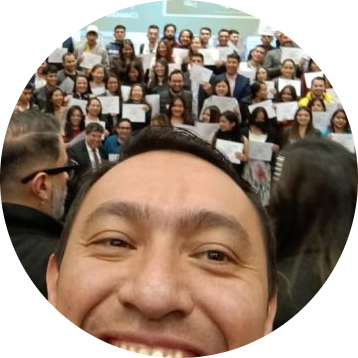

|  |
FRANK EDINSON BRAVO PATIÑOBogotá D.C | +57 3168326187 | frank.bravopatino@gmail.com | https://www.linkedin.com/in/frank-edinson-bravo-patiño/ Github profile |
Master of Bussiness administration and Master of digital Bussiness, Telecoms project manager and telecommunication engineer, certifications in Amazon Web Services (AWS) Cloud Practitioner and Solution Architect Associate.
More than +18 year in tecnology and Telecoms projects on different areas as: Scrum agiles and waterfall methodologys, solutions Architect cloud and on-premise, corporate trainer, pre-sales, post-sales, operations and maintenance, design, planning and implementation network solutions, software development, data analysis.
I have ability to identify and solve complex problems, coordinated team members and clients.
Futhermore, 3 year as postgrade teacher in subjects as IT, networks and cloud foundations.
| Project Manager | ⭐⭐⭐⭐⭐ |
| AWS Knowledge Services | ⭐⭐⭐⭐ |
| Python software development | ⭐⭐⭐ |
| Node JS software development | ⭐⭐⭐ |
| Dates | Company | Work |
|---|---|---|
| 2022-2023 | Nua technology | Project Manager- Team development |
| 2020 | Santo Tomas University | Project Manager - TV White Spaces project. |
| 2006-2019 | Balum S.A. | Pre-sales Senior Operations engineer Project Manager Integration and support engineer |
| UNIVERSITY | GRADUATION YEAR | TITLE |
|---|---|---|
| EAN UNIVERSITY | 2021 | Magister Bussiness administration |
| Universidad del Rosario | 2014 | Telecoms project manager |
| SANTO TOMAS UNIVERSITY | 2003 | telecommunication engineer |
| YEAR | COMPANY | CERTIFICATIONS |
|---|---|---|
| 2021 | AWS | certified Solution Architect |
| 2021 | AWS | Certified Cloud Practitioner |
| 2021 | Linkedin Learning | Python para data scientist avanzado |
| 2019 | EDX | Analyzing Data with Python |
| 2017 | Datapath INC | Training Software Maxview Solutions |
| 2017 | Tektronix | Video Solutions |
| 2013 | Viavi/Jdsu | Certification in Field Test Solutions |
| 2011 | Microsemi/Symetricom | Auditor and implementer in network synchronization solution |
My interests are in software development, soccer, driving cars, reading tech articles.